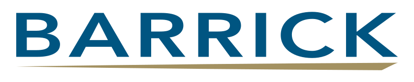

Apoyo remoto · Por entregable o seguimiento periódico
PLANIFICACIÓN & CONTROL DE PROYECTOS
REPÚBLICA DOMINICANA · VISIÓN GLOBALModelo 3D conceptual
EL PROYECTO AVANZA CUANDO EL PLAN CONECTA.
EXPERIENCIA EN EQUIPOS DE

01 / SERVICIOS FREELANCEAPOYO EXTERNO PARA TU EQUIPO.
¿Qué necesitas resolver?
Selecciona el encargo y consulta sus entregables y requisitos.
REVISIÓN DE CRONOGRAMA
Comprueba tu plan. Prioriza las correcciones.
Para contratistas y gerentes que ya tienen un cronograma y necesitan entender si su lógica, restricciones y ruta crítica sostienen la fecha de entrega.
Qué recibirás
Informe de hallazgos sobre dependencias, restricciones y ruta crítica
Lista priorizada de correcciones y supuestos por validar
Sesión de revisión de hallazgos y próximos pasos
Alcance y qué necesito para empezar +
Cronograma editable, alcance y fechas comprometidas. La revisión no incluye rehacer el plan completo.
Encargo puntual · alcance y honorarios según tamaño y estado del archivo.
Cada propuesta define los archivos de entrega, las revisiones incluidas y los criterios de aceptación.
02 / EJEMPLOS DE TRABAJOUNA DEMOSTRACIÓN. TUS DECISIONES CAMBIAN EL PLAN.
Así se ve el trabajo.
Explora un cronograma y el reporte que lo acompaña.
Este caso ficticio muestra cómo conecto una desviación con la previsión de entrega y las acciones por revisar. No representa un encargo de un cliente.
Montaje de un sistema mecánicoSECUENCIA DE EJEMPLO · RELACIONES FIN–INICIO
↔ Desliza el cronograma de lado a lado para ver todas las actividades y fechas.
ACTIVIDADDÍAS
Línea base Escenario Ruta críticaSelecciona una actividad para ver su detalle.
De 0 a 10 días adicionales en compras.
Supone recursos adicionales y validación de productividad y seguridad.
ENTREGA DEL ESCENARIODía 31
+4 días frente a la línea base
El modelo usa días laborables consecutivos y duraciones de ejemplo; no representa datos de un cliente.
REPORTE DEMOSTRATIVO · DATOS DEL SIMULADOR
Lo que necesita saber el equipo.
Este resumen responde a los controles del cronograma anterior. D0 es el inicio del ejemplo; no se utilizan fechas de un proyecto real.
Entrega de línea base
Día 27
Previsión del escenario
Día 31
Desviación
+4 días
Acción propuesta
Confirmar la fecha de suministro y revisar su efecto en el inicio del montaje.
Responsable propuesto: compras y planificación.
Decisión pendiente
Validar recursos, productividad, costo y seguridad antes de aprobar una reducción de duración.
Aprobación propuesta: dirección del proyecto.
El ejemplo no calcula costos ni acredita una recuperación real. El alcance y la viabilidad se revisan con los datos de cada proyecto.
¿Necesitas este análisis para tu proyecto?
03 / CÓMO TRABAJAMOSUN ENCARGO CON ALCANCE CLARO.
Del primer contacto al entregable.
01
Cuéntame la necesidad
Tipo de proyecto, etapa actual, fecha objetivo y documentación disponible.
02
Acordamos el encargo
Recibes una propuesta con alcance, entregables, plazo, honorarios y revisiones incluidas.
03
Desarrollo y revisión
Trabajo con la información acordada y revisamos supuestos y observaciones con tu equipo.
04
Entrega y próximos pasos
Recibes los archivos acordados y una explicación para utilizarlos. El seguimiento adicional se define por separado.
04 / TRAYECTORIAEXPERIENCIA QUE RESPALDA EL SERVICIO.
La experiencia detrás del plan.
EXPERIENCIA EN CAMPO2019 — 2023
↻ 01 · Vista general
01
MINERÍA · CALIDAD
El detalle importa.
MODELO 3D CONCEPTUAL
01JUN 2019 — SEP 2023
BARRICK GOLD CORPORATION
Primero, entender la obra.
Project Engineer · Quality Engineer
En la expansión minera, el avance dependía de que planos, contratistas e inspecciones llegaran al mismo punto.
Coordiné el seguimiento de calidad, pruebas y cambios de diseño con los equipos de campo.
LO QUE LLEVO A TU PROYECTO
Un avance solo tiene valor cuando el trabajo está verificado.
02NOV 2023 — SEP 2024
SISI ENGINEERING
Del plano al montaje.
Site Project Manager · Modular Distillation Train
La ingeniería de detalle, las compras y el montaje deben conversar todos los días.
Dirigí la ejecución en sitio, coordinando contratistas, proveedores y control de calidad de tanques y tuberías.
LO QUE LLEVO A TU PROYECTO
Un plan que considera materiales, accesos y restricciones reales.
03OCT 2024 — JUN 2025
BARRICK GOLD CORPORATION
Coordinar para avanzar.
Mechanical Project Engineer · Mine Optimization
En una operación minera, cada intervención comparte espacio con la continuidad del negocio.
Planifiqué proyectos mecánicos, coordiné equipos y contratistas, y di seguimiento técnico al avance.
LO QUE LLEVO A TU PROYECTO
Prioridades claras entre ingeniería, ejecución y operación.
04JUN 2025 — ACTUALIDAD
ALSTOM
Ver el proyecto completo.
Project Planning Engineer · Monorriel de Santiago
El cronograma conecta disciplinas, recursos y entregas que deben funcionar como un sistema.
Trabajo con WBS, líneas base, ruta crítica, curvas S y EVM para convertir los avances de múltiples equipos en información para decidir.
LO QUE LLEVO A TU PROYECTO
Visibilidad de las desviaciones y escenarios para actuar a tiempo.
05 / FORMACIÓNFORMACIÓN QUE ACOMPAÑA LA EXPERIENCIA.
Formación en planificación y control.
Seis formaciones vinculadas al servicio: cronogramas, avance físico, valor ganado e indicadores. Consulta sus documentos.
06 / PREGUNTAS FRECUENTESANTES DE SOLICITAR UNA PROPUESTA.
Aclaremos lo esencial.
Si tu encargo tiene requisitos particulares, inclúyelos en la consulta.
¿Cómo se define el precio?+
Según el alcance, el estado de la información, la complejidad del cronograma y la frecuencia de seguimiento. La propuesta indica honorarios, condiciones de pago y entregables antes de iniciar.
¿Puedes trabajar con mi cronograma actual?+
Sí. Puedes solicitar una revisión del archivo existente o un encargo de actualización. Primero revisamos el formato disponible, la fecha de corte y los problemas que necesitas resolver; las correcciones a ejecutar se delimitan en la propuesta.
¿Qué información necesitas para comenzar?+
El alcance, la etapa del proyecto, las fechas objetivo y los documentos disponibles: cronograma, cantidades, restricciones o reportes de avance. Si falta información, acordamos qué debes proporcionar y qué supuestos necesitan validación.
¿En qué formato recibo el trabajo?+
Se acuerda en la propuesta. Puede incluir un cronograma editable en Microsoft Project, archivos de Excel, un reporte PDF o una automatización con instrucciones. Los formatos y archivos fuente incluidos se especifican por encargo.
¿El servicio puede ser remoto o periódico?+
Puede contratarse apoyo remoto por un entregable o seguimiento periódico. La frecuencia de actualización, las reuniones, los canales de coordinación y la información que aporta cada parte se acuerdan antes de empezar.
¿Puedes garantizar la fecha final del proyecto?+
El análisis identifica riesgos y compara alternativas; la fecha depende también de suministro, recursos, productividad y decisiones de ejecución. Las previsiones y escenarios se presentan con sus supuestos para validarlos con el equipo.
07 / SOLICITA UNA PROPUESTAREPÚBLICA DOMINICANA · COLABORACIÓN REMOTA
APOYO FREELANCE EN PLANIFICACIÓN Y CONTROL.
Cuéntame qué necesitas resolver.
Indica el tipo de proyecto, el apoyo que necesitas y tu fecha objetivo. Revisaremos la información para definir alcance, plazo y honorarios.
Los servicios se realizan conforme a una propuesta aceptada por escrito, que define alcance, entregables, formatos, plazo, honorarios, condiciones de pago y revisiones incluidas. El inicio queda sujeto a esa aceptación y a la disponibilidad de la información acordada. Los cambios de alcance y trabajos adicionales requieren acuerdo previo y pueden modificar el precio o el calendario. El cliente proporciona y valida los datos del proyecto y designa a quien revisa y aprueba los entregables. La información recibida se utiliza para el encargo y no se publica como muestra sin autorización; los requisitos específicos de confidencialidad se acuerdan antes de compartirla. Los cronogramas, indicadores y escenarios son herramientas de apoyo a la decisión basadas en los datos y supuestos documentados; no garantizan por sí solos una fecha de terminación, un ahorro o un resultado de ejecución. La solicitud de una propuesta no constituye contratación ni compromiso de inicio.